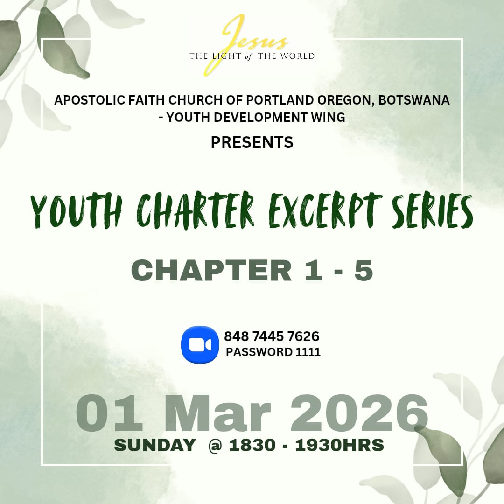
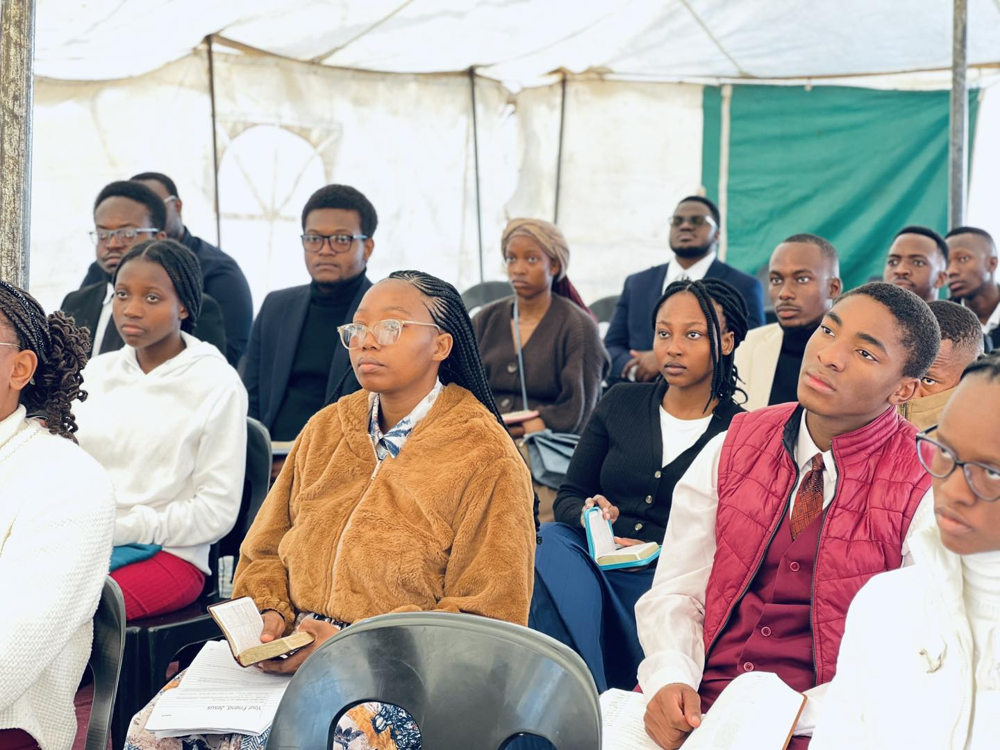
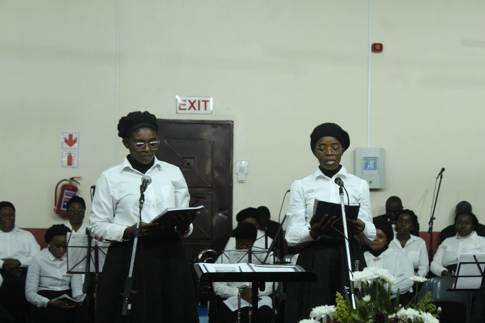

A documented account of how the Gospel of Jesus Christ came to Botswana — from one man's healing in Zimbabwe in 1968 to a nationwide fellowship of believers that continues to grow today.
One man's desperate search for healing became the spark that lit an entire nation's Gospel fire.
"Our mother's life, Sister Amelia M. Maseko, was truly a proof that God saves and keeps. Her victorious life was a testimony of the power of God. Her words were: 'I can't leave the Gospel because of the power of God I have seen in my life. I desire and endeavour to make it through to eternal life in Christ Jesus.'"
"Having come to the Gospel as a child, I saw the beginning and the growing of the Gospel work in Lobatse and Botswana as a whole. I was privileged to take part in the outreach that led to the establishment of several branches in the country. I faced really tough opposition at home, but even as a child God gave me the grace to hold on."
The mission has always been Evangelism — preaching the Word of God in its entirety and reaching areas where the Word had never been heard, to win souls for Christ.
This regional outreach programme is in place in Botswana and led by Pastor Ben Bhuka. Through this programme, revivals are held nationally — taking the Gospel to places and opening new branches across the country.
A unique feature of this ministry is that there is no selling of publications and no collection plates in church services. Literature is mailed throughout the world free of charge. For over 100 years God has provided financially for the outreach through tithes and free-will offerings.
"Earnestly contend for the faith which was once delivered unto the saints."Jude 1:3
The governing body of the Apostolic Faith work in Botswana is the Board of Trustees. The Country Overseer reports directly to the District Superintendent of Southern Africa and presides over all Board meetings, national workers meetings, and the national annual camp meeting.
| Name | Role | Base |
|---|---|---|
| Rev. Lordick K. Motshidisi | Board Chairman · Country Overseer | Gaborone |
| Rev. Phineas Nkobi | Board Member · Provincial Overseer | Southern — Lobatse |
| Rev. Ben Bhuka | Board Member · Provincial Overseer | Boteti — Letlhakane |
| Rev. Isaac Mabelebele | Board Member · Provincial Overseer | North East — Francistown |
| Rev. Loomatsoga D. Gaogane | Board Member · Provincial Overseer | Central — Mmutlane |
| Rev. Edward Nakasala | Board Advisor · Provincial Overseer | South East — Gaborone |
| Rev. Gotulweng K. Katholo | Board Secretary / Treasurer | Orapa |
Board composition as documented in the 2015 church history publication. Current board membership may have changed. Contact the National Office for up-to-date leadership details.
One of the most outstanding spiritual events in the Apostolic Faith is the annual camp meeting. The first was held in Portland, Oregon in 1907 and has not missed a year since. Botswana's own camp meeting tradition began in 2004.
Believers from neighbouring countries and beyond attend, sharing the same Spirit of camp meeting and blessings of God as manifested in Portland, Oregon. From the onset, attendance was in large numbers and increasing every year — motivating brethren within Botswana and abroad to attend and experience a wonderful time of spiritual refreshment.
Camp meetings have been held under a different theme each year. The national camp meeting is also a platform for international and regional delegations — strengthening the bond between Botswana and the worldwide Apostolic Faith fellowship.
"It has been so good to work for God. Eleven years as Chairman of the Camp Meeting Committee has been nothing but joy — full of blessings. Through prayers and God's Word, you do not see the challenges that are there BUT see the Hand of God guiding and purposing to do more and more."
"But sanctify the Lord God in your hearts: and be ready always to give an answer to every man that asketh you a reason of the hope that is in you with meekness and fear." — 1 Peter 3:15
God loves the youths. Through generations, He has mightily used young people to the glory of His name — and Botswana is no exception.
In Botswana, youth programmes were close to non-existence for many years. God in His own good time brought in Sister Mavis Mateyu as youth conductor and Sister Lillian Thanke as youth leader in Southern Botswana. They took all the young people into a singing programme which triggered so much interest and response.
The coming in of Brother Moses Zulu as Youth Pastor enhanced the whole youth programme nationally. Today many youths are diligent workers — wherever there is work to be done, youths are found there performing. Under the new church structure, Brother Motlhabani Kemorwale was appointed Chairman of the Youth Committee.
"I started with the Gospel straight where it began in Botswana. I grew up in the Gospel and 'CYC No1 is our Motto' was our song. The Gospel was our life and everything. By God's power and grace we were walking over every challenge. We would travel as far as Zerust (RSA) in a spirit of revival — every day was a revival."
"Having grown up in a Christian home I heard the Word. I realized the privilege that I have which many do not have. I was challenged to show others what it means to work for God — and singing is one of them, because not everyone is there to serve the Lord. This helps me grow spiritually."

Youth Service
Youth Fellowship

Right from the beginning, music has always been a vitally important part of the Gospel work in the Apostolic Faith Church — bringing everyone closer to God.
In the early days of the Gospel work in Botswana, Rev. Loomatsoga Gaogane learnt Gospel music in Zimbabwe without any formal training. His passion for singing for the Lord led him to become the first Conductor and then Director of Music in Botswana — with great support from brethren including Brother Freedom Sengwayo from Zimbabwe.
Formal music training was later introduced to Botswana and a mini-orchestra of five members began performing. Today the ensemble includes flutes, clarinets, violins, trumpets, trombones, tuba and double bass. Common Hymn books are used in services, with some songs being translated into local languages.
In Botswana, two national concerts are held annually — at Easter and Camp Meeting. These inspirational concerts have always been crowd-pullers, with many people coming to know Christ through the sacred singing of the Gospel choir and orchestra.
"I think we as human beings when we think about God we cannot comprehend how big our God is. Throughout our music, all the songs are just talking about the Greatness of God. May God help us recognize His Greatness."

Camp Concert
Add music photos by placing images in css/images/ and naming them music1.jpg, music2.jpg, etc.
"We believe in the divine inspiration of the Bible, and endorse all the teachings contained in it. Following is a summary of our basic doctrines."
Three Persons: God the Father, Jesus Christ the Son, and the Holy Ghost — perfectly united as one.
Matthew 3:16–17 · 1 John 5:7The act of God's grace through which we receive forgiveness for sins and stand before God as though we had never sinned.
Romans 5:1 · 2 Corinthians 5:17The second definite work of grace whereby we are made holy — subsequent to justification, enabling victorious Christian living.
John 17:15–21 · Hebrews 13:12The enduement of power upon the sanctified life, evidenced by speaking in tongues as the Spirit gives utterance.
John 14:16–17 · Acts 2:1–4By one immersion in the name of the Father, the Son, and the Holy Ghost — an outward sign of an inward work of grace.
Matthew 3:16 · 28:19The healing of sickness is provided through the atonement of Christ Jesus our Lord.
James 5:14–16 · 1 Peter 2:24The literal, bodily return of our Lord Jesus Christ — first to receive His Bride, then to execute judgment upon the ungodly.
Matthew 24:40–44 · 1 Thessalonians 4:15–17Ordained by Jesus so that we remember His death until He returns.
Matthew 26:26–29 · 1 Corinthians 11:23–26A covenant between one man and one woman, binding before God for life.
Mark 10:6–12 · Romans 7:1–3For a complete Statement of Bible Doctrine and further resources:
Visit apostolicfaith.orgFind a branch near you and experience the Apostolic Faith community firsthand.